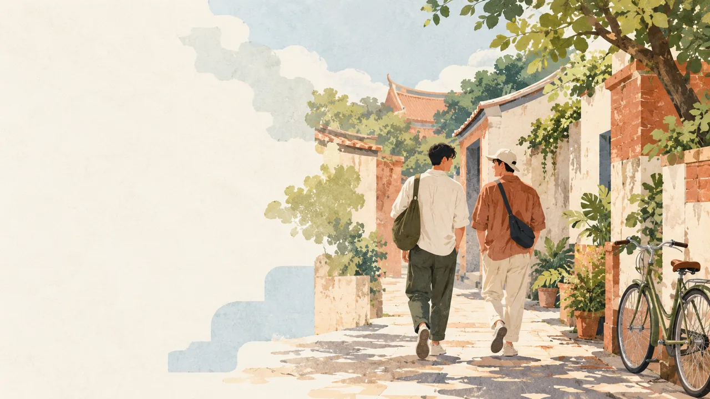

早餐：府城早午餐
先用一份台式早午餐暖胃，開啟輕鬆的台南散步日。

FRIENDS' MINI TRIP · 小安／小晴／阿宇
台南兩天一夜｜慢慢走、好好吃，和朋友一起感受台南的老派浪漫。
集合地點：台南高鐵
先用一份台式早午餐暖胃，開啟輕鬆的台南散步日。
走進古蹟看紅磚院落，再沿著巷弄尋找小店和老房子。
放下行李後到安平樹屋、老街一帶走走，享受午後海風。
大家分頭買喜歡的小吃，最後集合分享戰利品。
用一碗熱騰騰的牛肉湯補充元氣，準備迎接第二天。
拍拍清新的街景與裝置藝術，也預留時間逛逛選物小店。
找間舒服的店吃午餐、喝咖啡，順便整理旅程照片。
在綠蔭與老街道間慢慢走，買份伴手禮後準備踏上回程。
示意：晴時多雲，氣溫約 24–30°C，午後可能有短暫雨。
示意：雨具、水壺、行動電源、防曬用品與好走的鞋子。
示意：第一天上午 09:00，台南火車站前站出口集合。